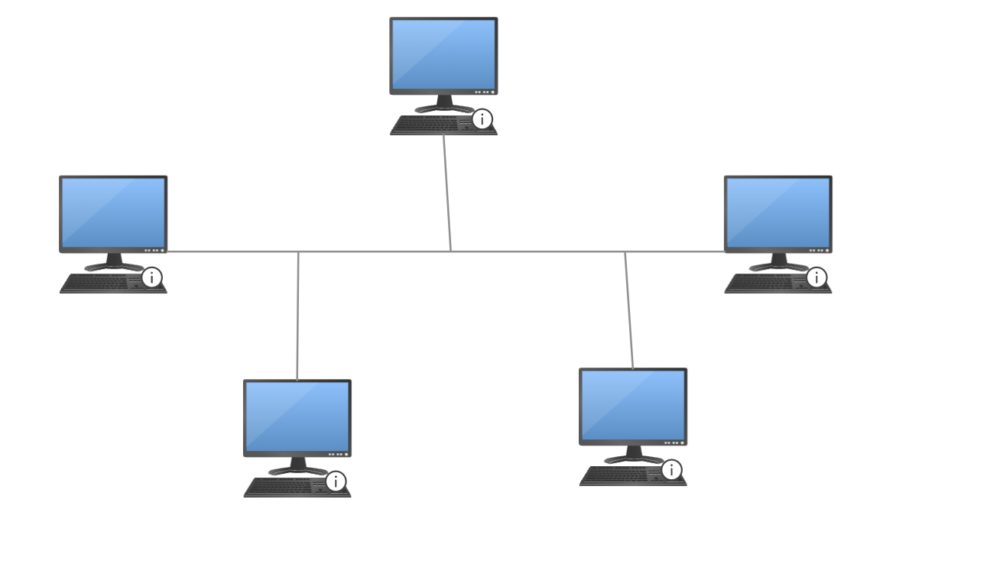
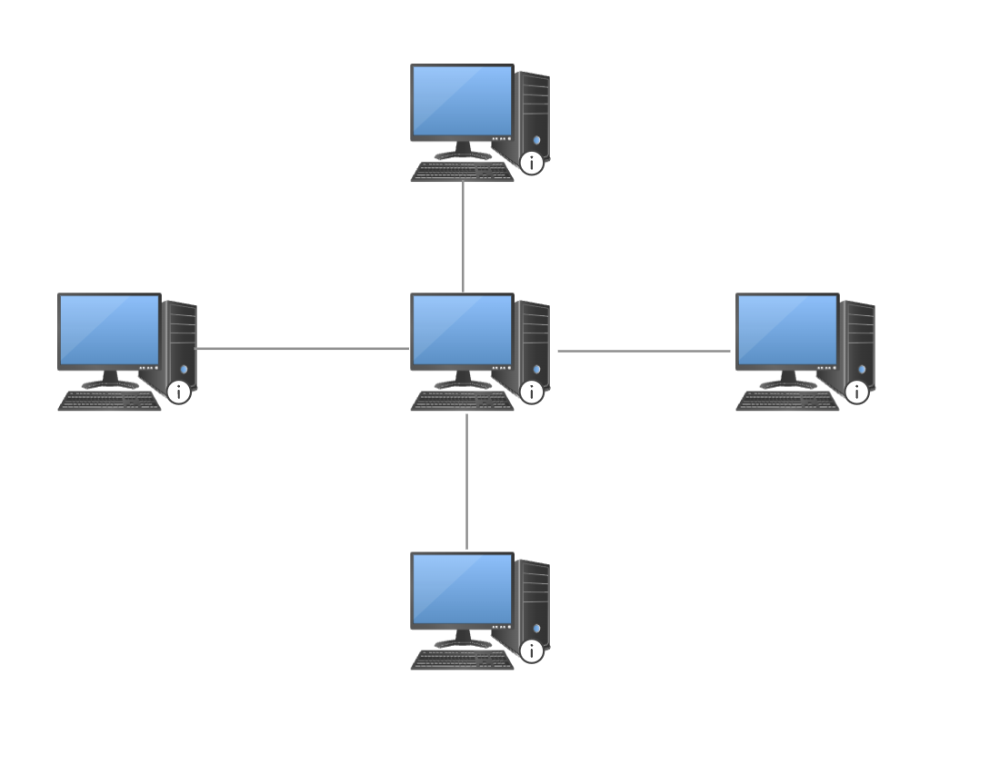
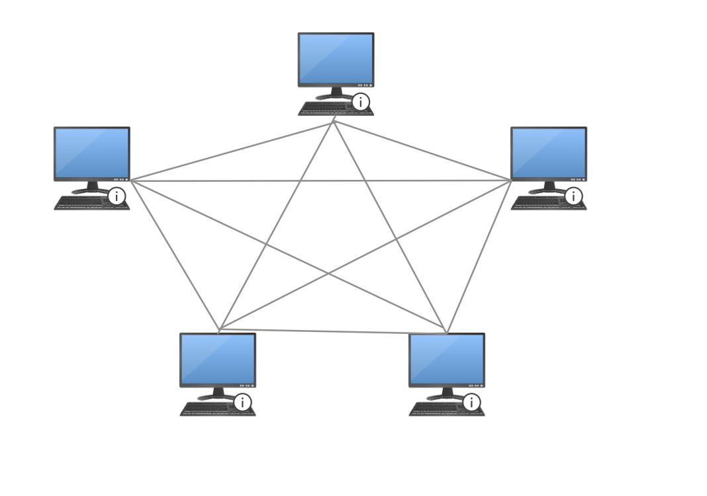
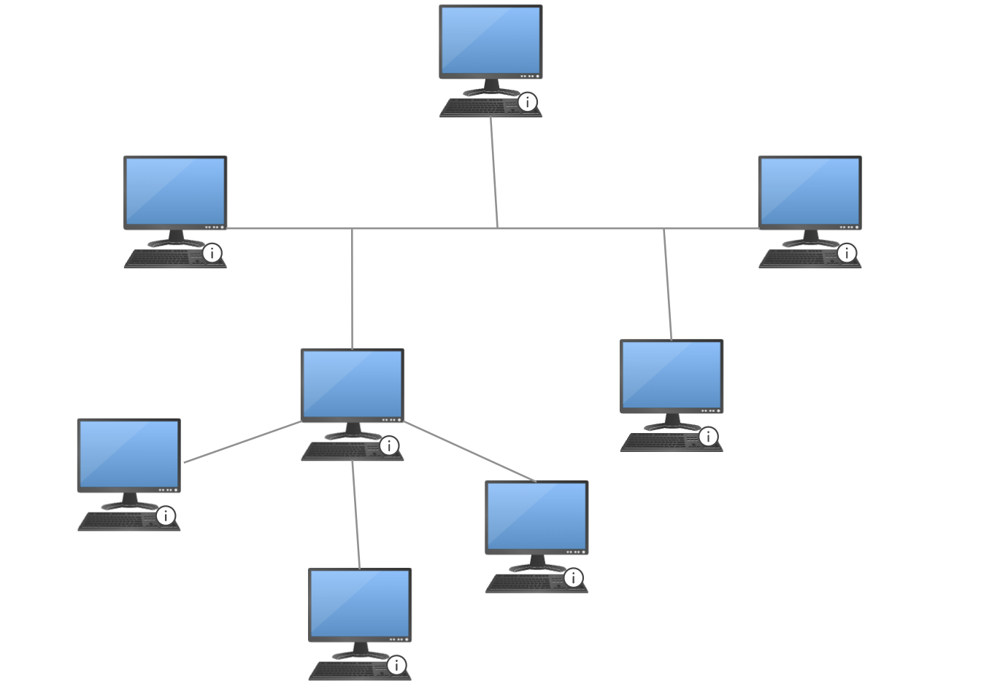

Computer Network Topology
A computer network topology is the physical and logical layout of the network communication channels.
There are several different types of network topologies, each with its own advantages and disadvantages.
The most common types of network topologies include bus, ring, star, mesh, and hybrid.
The network topology you choose will depend on your specific needs and requirements.
For example, a bus topology is ideal for small networks, while a ring topology is better suited for larger networks.
A star topology is the most common type of network topology and is used in most home and office networks.
Types of Network Topologies
There are several different types of network topologies, each with its own advantages and disadvantages.
The most common types of network topologies include:
- Bus Topology
- Ring Topology
- Star Topology
- Mesh Topology
- Hybrid Topology
Bus Topology
A bus topology is a type of network topology in which all devices are connected to a single communication line.
The communication line is called a bus, and all devices share the same line to communicate with each other.
Bus topologies are simple and easy to set up, but they can be slow and have limited scalability.

Ring Topology
A ring topology is a type of network topology in which each device is connected to two other devices,
forming a ring-like structure. Data travels around the ring in one direction, passing through each device
until it reaches its destination. Ring topologies are reliable and efficient, but they can be difficult to
troubleshoot and expand.
Star Topology
A star topology is a type of network topology in which all devices are connected to a central hub or switch.
The central hub acts as a mediator, allowing devices to communicate with each other through the hub.
Star topologies are easy to set up and maintain, but they can be expensive and have a single point of failure.

Mesh Topology
A mesh topology is a type of network topology in which each device is connected to every other device in the network.
This creates a redundant network, allowing data to travel through multiple paths to reach its destination.
Mesh topologies are reliable and scalable, but they can be complex and expensive to set up.

Hybrid Topology
A hybrid topology is a combination of two or more different types of network topologies.
For example, a network that uses a combination of star and mesh topologies is considered a hybrid topology.
Hybrid topologies offer the benefits of multiple topologies, such as reliability, scalability, and redundancy.
